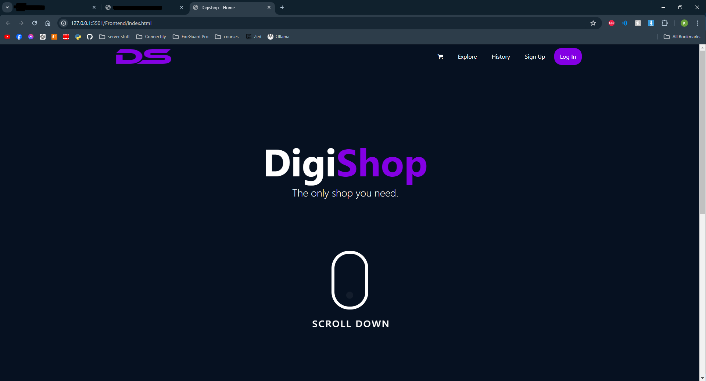
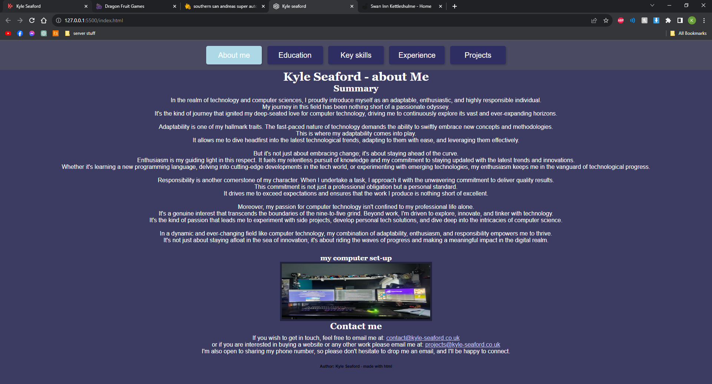
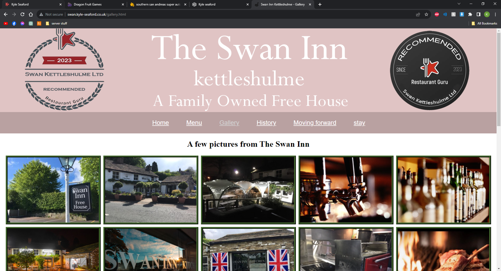
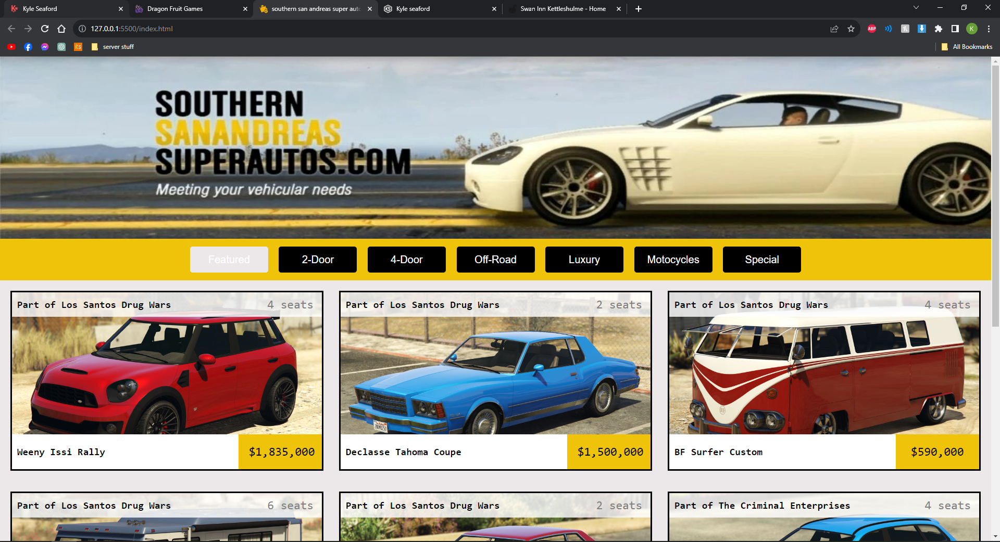
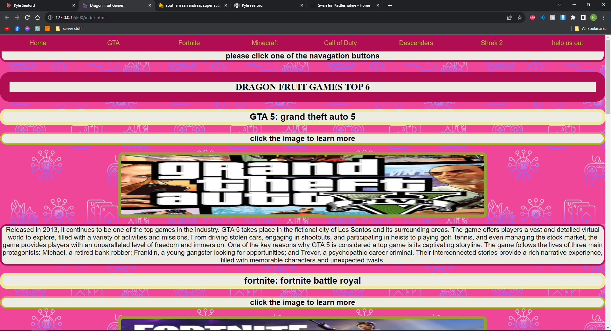

Mountain Biking, Coding, and Digital Production Design Student
Websites - Newest to Oldest
personal website V2 (the page you are on now): This website is a display of my skills and projects. It is a responsive website that adapts to different screen sizes. The website is built using HTML, CSS, and JavaScript.
DigiStore: As a small team we are developing a website for a fictional online store using HTML, CSS, Python and JavaScript. Learn more by visiting our GitHub (Unfortunately it's currently private).
×

Personal Website V1: With the desire to showcase my skills and accomplishments, I transformed my traditional CV into a dynamic and interactive online platform. The website served as a digital representation of my professional journey.
By adapting my CV into a web format, I aimed to provide visitors with a more engaging and informative experience. I didn't really like the styles and layout of this website so I decided to create a new one (the one you are currently on).
×

Pub / Restaurant Website: I started developing a website for a local pub; however, after sharing my idea with them, they unfortunately were uninterested. The website was intended to be simple, featuring a menu, gallery, history, and contact page. I never fully finished this site due to other projects and work commitments, but it helped me further understand HTML and CSS.
×

Southern San Andreas Super Autos from GTA5: My second venture into web development led to a visually pleasing creation, though it never made it to the public domain. This project was a recreation of the Southern San Andreas Super Autos website from GTA 5. Unlike its predecessor, this endeavor was a fusion of fun and learning. The recreation process involved delving into the intricacies of design, aiming to capture the essence of the in-game website. Every detail, from the layout to the visual elements, was meticulously crafted to mirror the GTA 5 experience. As a result, the project became a canvas for honing my skills in HTML, CSS, and design principles. While the website may not have seen the light of day, the journey of replicating a virtual platform into a tangible web design proved to be an engaging and enlightening experience. This endeavor, with its visual appeal and educational value, contributed significantly to my growth.
×

Dragon Fruit Games: Conceived in September 2023, marked my foray into web development. While the website never saw the light of day, its creation served as my initial exposure to HTML. Admittedly, the design was far from perfect, chaotic layouts and amateurish aesthetics prevailed. Yet, every flaw illuminated a path of improvement. What may have appeared as a subpar design became a canvas for learning. Each coding misstep transformed into a stepping stone for growth. The "shocking" appearance was, in essence, a testament to my evolving skills. In retrospect, "Dragon Fruit Games" was more than a dormant project; it was a journey from coding novice to a more seasoned developer. The site, with all its imperfections, kindled my enduring passion for web development.
×

Draw with Kyle: In 2012, I took on the challenge of creating my very first website, and I had some fantastic guidance from my dad along the way. This project marked my foray into the world of WordPress. The main goal? To showcase my love for drawing, a passion that was gaining momentum at the time. But the website wasn't just about art; it also became a space where I shared reviews of local parks and highlighted various projects I was working on. Looking back, that website captures a snapshot of my creative journey and interests during that period. It's a testament to those early days of exploring the online world and finding a way to express myself. Visit Draw With Kyle.